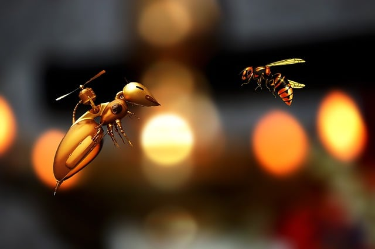

La abeja es el insecto volador conocido por producir la deliciosa miel consumida alrededor del mundo. Pertenece al orden Hymenoptera y a la superfamilia Apoidea. No obstante, la abeja no es una sola especie, sino que el género contiene cerca de 20.000 especies de abejas agrupadas en 9 familias, por lo que no todas las abejas producen la miel.
El color de las abejas varía de acuerdo con su especie, pero las más conocidas son negras y tienen franjas amarillas que se sitúan de forma diferente en cada especie. Por ejemplo, la abeja melífera o europea (Apis mellifera) posee tonalidades doradas con líneas negras horizontales en la parte superior del cuerpo. Por su parte, la especie Anthidium florentinumtiene tiene las franjas solo en los costados de su cuerpo.
En general, las abejas tienen una estructura larga llamada probóscide, con la que pueden ingerir el néctar de las flores. En los machos, las antenas están compuestas por 13 segmentos y en las hembras están compuestas por 12. Todas las abejas cuentan con 2 pares de alas; el par posterior es el más pequeño. En algunas especies las alas son tan pequeñas que imposibilitan a la abeja el vuelo, pero eso no significa que estén desprovistas.
Pero si de características de las abejas se trata, no podemos dejar de mencionar una de las partes más representativas: el aguijón. El aguijón se llama ovipositor y forma parte de la reproducción de la abeja. Unida al aguijón se encuentra una bolsa que contiene veneno, pero solo las hembras pueden picar.
La abeja es famosa por su comportamiento altamente organizado y enfocado en el trabajo. Forma colonias constituidas por miles de individuos y cada uno de ellos tiene una función por realizar. Cada colonia ocupa una colmena o panal y en cada una cohabitan 3 tipos de abeja: la reina, las obreras y los zánganos. La abeja reina es la única que puede poner huevos y su función es solamente reproductiva. Las obreras son hembras estériles y se encargan de limpiar el panal, recoger el polen y cuidar a las crías. Por su parte, los zánganos, que son todos machos, se encargan de aparearse con la reina.
Algunas especies de abejas son agresivas y el ser humano ha aprendido a temerles. Suele suceder que la abeja muere después de picar, pues el aguijón se queda en la piel del afectado junto con parte del abdomen.
Un hecho interesante en el comportamiento de las abejas melíferas es que sostienen una forma de comunicación descubierta en la década de los años 70 por el investigador Karl von Frisch. De acuerdo con este descubrimiento, la abeja realiza una especie de danza con el objetivo de compartir información sobre la ubicación de las flores. Las obreras regresan al panal y comienzan a danzar arriba y abajo por la pared vertical. La distancia hacia las flores depende de la duración del meneo y del número de agitaciones: mientras más lejos se encuentran las flores, más larga es la línea del meneo y más lento es el ritmo de las agitaciones. Dónde viven las abejas